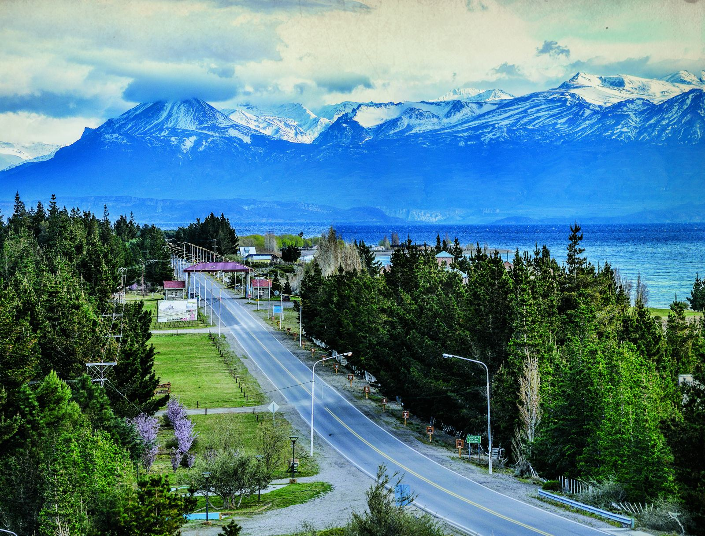
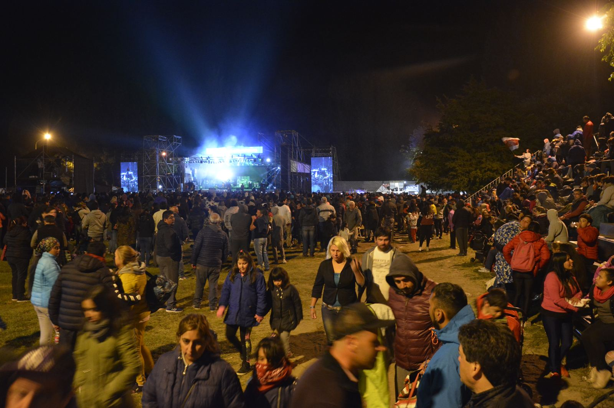
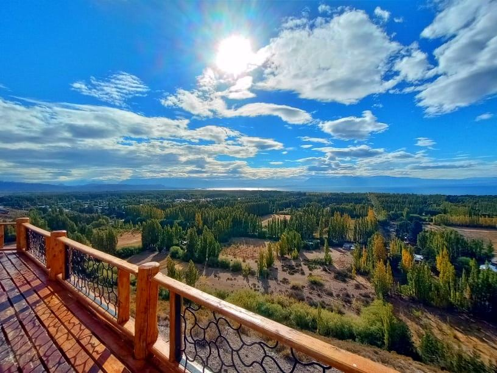
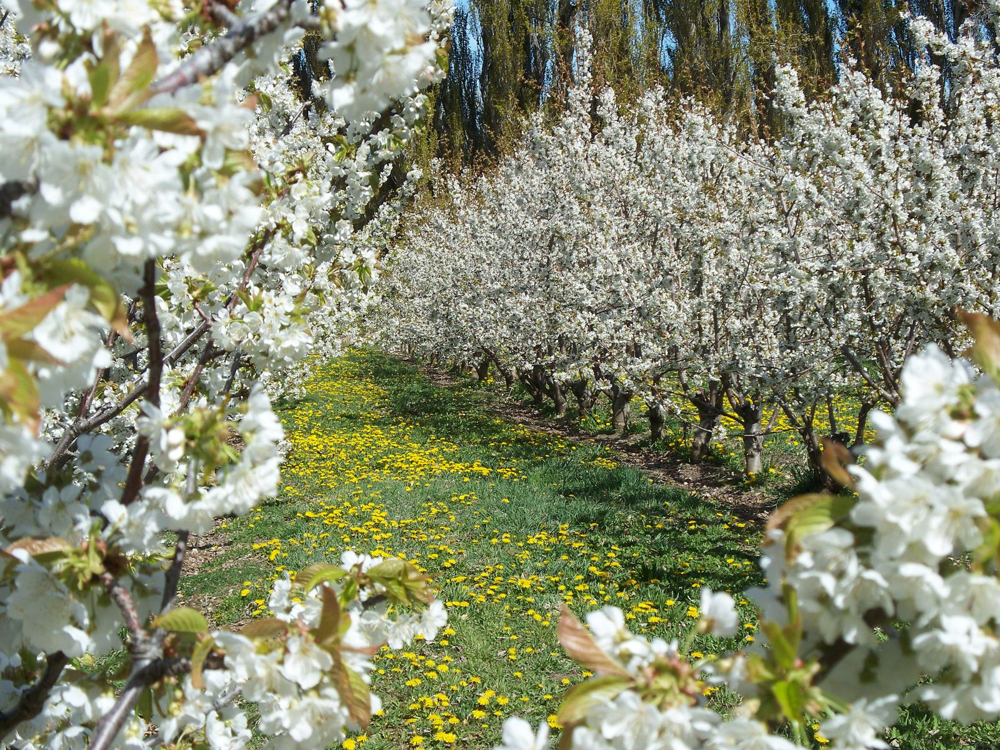
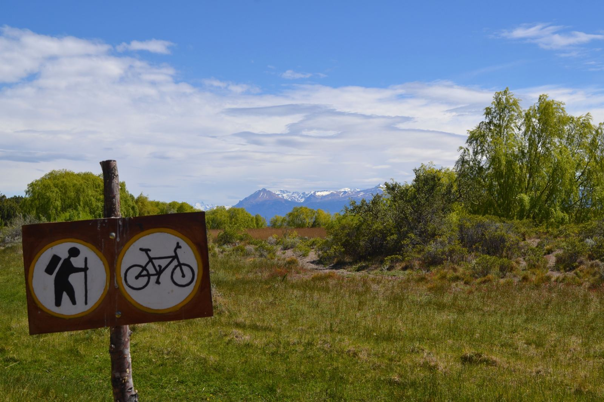
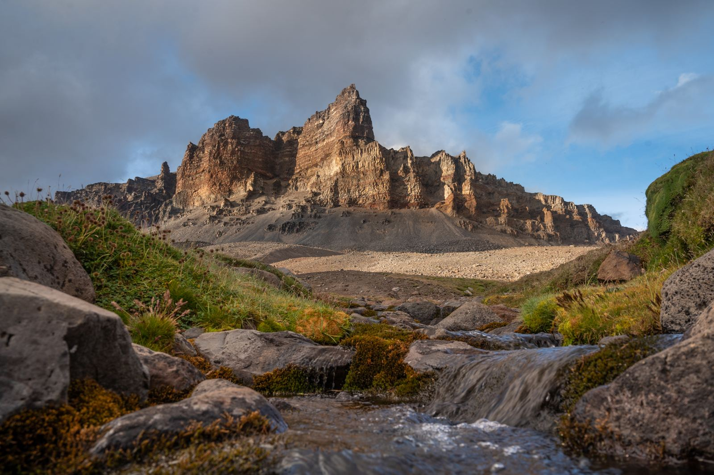
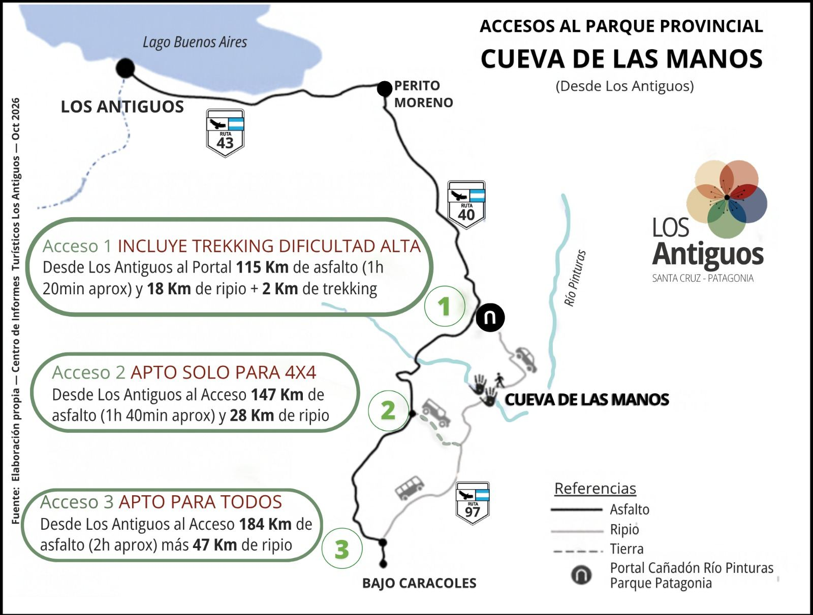
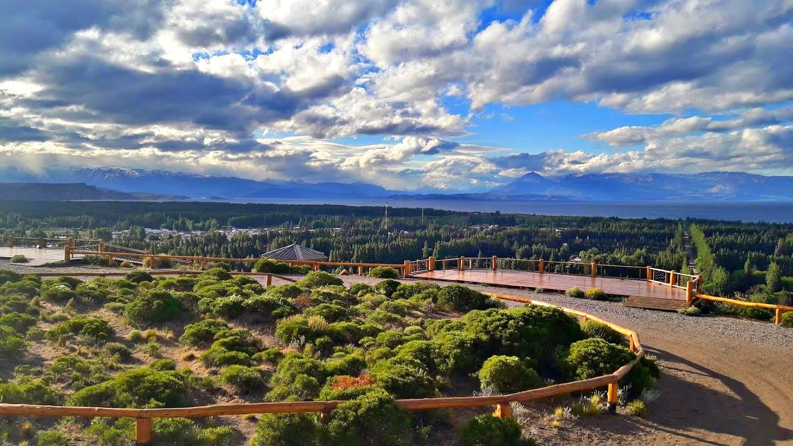
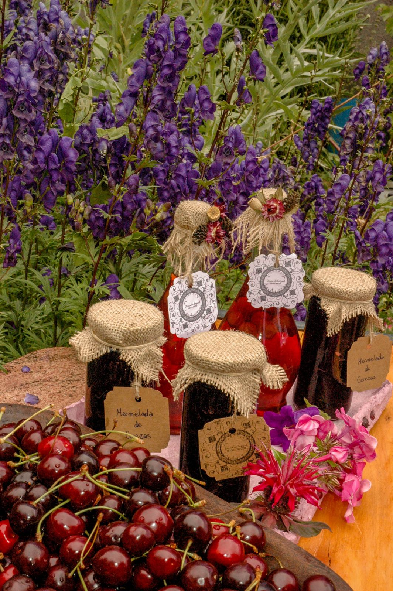

★ Destacado · Información turística oficial
Turismo Los Antiguos
Información oficial de la Subsecretaría de Turismo de Los Antiguos: atractivos, excursiones, Fiesta Nacional de la Cereza, alojamientos y gastronomía.
★ Centro de Informes Turísticos
Subsecretaría de Turismo de Los Antiguos
- 📍 Lago Buenos Aires N° 59, Los Antiguos, Santa Cruz
- 🕗 Lunes a lunes de 8 a 20 h, también feriados, fiestas, asuetos y fines de semana
- 📞 WhatsApp +54 9 297 621-2055
- ✉️ turismolosantiguos@gmail.com
- 📷 Instagram @turismolosantiguos · Facebook turismolosantiguos
- 🔗 Más información: linktr.ee/losantiguosturismo
36.ª Fiesta Nacional de la Cereza
La celebración más importante de Los Antiguos: música, gastronomía, tradición y paisaje patagónico.
- 8, 9 y 10 de enero de 2027.
- 8 y 9 de enero: festival en el escenario mayor.
- 8, 9 y 10 de enero: doma organizada por la Agrupación Patria y Tradición.

Fiestas locales durante el año
- Enero: Fiesta Nacional de la Cereza
- Febrero: Día del Pueblo
- Abril: Semana Santa
- Julio: Encuentro Binacional de Acordeonistas
- Septiembre: Fiesta del Estudiante
- Octubre: Mes del Cerezo en Flor
- Noviembre: Fiesta del Lago Buenos Aires
Excursiones de medio día
Miradores
Distintas vistas del valle, sus dos ríos (Los Antiguos y Jeinimeni) y los mejores atardeceres. Distancias desde el Centro de Informes:
- Mirador Uendeunk (Espíritu Bueno), acceso por ex Ruta 520: 900 m. Vista de la zona urbana.
- Mirador del Lago Buenos Aires, acceso por el ex Muelle Viejo: 2,3 km.
- Mirador Río Jeinimeni, camino a la Ruta Provincial 41: 2,8 km.
- Mirador del Valle, acceso por ex Ruta 520: 3,5 km. Vista del valle productivo y los cordones montañosos.

Chacras
Según la época del año se pueden visitar las chacras familiares para degustar sus productos frescos y elaborados, recolectar cerezas, frutillas o frambuesas, o recorrer las plantaciones florecidas de blanco en octubre.

Reserva Natural Urbana Laguna de los Juncos
Un espacio natural en el corazón del pueblo que protege la flora autóctona (neneo, paramela, calafate) y da refugio a más de 60 especies de aves residentes y migratorias, como flamencos, cisnes de cuello negro, garzas y chorlos. Ideal para observación de aves, fotografía y senderos.

Excursiones de día entero
Ruta Escénica 41
Camino de montaña de ripio que sube desde los 200 hasta los 1.500 m s. n. m. en El Portezuelo, bordeando los cañadones de los ríos Jeinimeni y Los Antiguos, con un bosque de lenga de 800 ha y paisajes volcánicos. Los Antiguos–bosque: 55 km; Los Antiguos–Portezuelo: 77 km; Portezuelo–Lago Posadas: 35 km. Apto para todo tipo de vehículo (se recomiendan vehículos altos); con nevadas o grandes lluvias puede volverse intransitable. Cargá combustible en Los Antiguos y consultá el estado del camino antes de salir.

Reserva Natural Silvestre La Ascensión
A 17 km por la Ruta Nacional 43: casco histórico de una de las estancias laneras más grandes de la región y circuitos de caminata de distinta dificultad; el más largo asciende a la meseta del lago Buenos Aires (1.456 m s. n. m.), con lagunas de altura donde anida el macá tobiano. Forma parte del Parque Nacional Patagonia (52.811 ha).
Cueva de las Manos
A 220 km de Los Antiguos, pinturas rupestres de casi 10.000 años, Patrimonio de la Humanidad (UNESCO). Hay tres accesos:
- Acceso 1 (incluye trekking de dificultad alta): 115 km de asfalto (1 h 20 min aprox.) y 18 km de ripio hasta el portal, más 2 km de trekking.
- Acceso 2 (solo 4x4): 147 km de asfalto (1 h 40 min aprox.) y 28 km de ripio.
- Acceso 3 (apto para todos): 184 km de asfalto (2 h aprox.) y 47 km de ripio.
Consultá los detalles en el Centro de Informes.

Pesca
En el lago Buenos Aires y los ríos Los Antiguos y Jeinimeni: trucha marrón, arco iris, criolla o perca, de arroyo, y salmones Sakura y Coho. Se pesca todo el año; los mejores períodos son de agosto a noviembre y de marzo a abril.
Excursiones a Chile
Con base en Los Antiguos: Chile Chico está a unos 7 km; desde allí, la Reserva Nacional Laguna del Jeinimeni (60 km al sur), Bahía Jara (unos 25 km) y las Catedrales de Mármol (unos 174 km), que se pueden visitar en el día y volver a dormir a Los Antiguos.
Agencias, transporte y remises
Agencias de viaje
- Chelenco Tours: +54 9 2975 20-4598
- Huellas Aventura Sur: +54 9 11 6299-1254
- 41 Tours: +54 9 2494 02-6683
Servicio de transporte
- The Way Travel: +54 9 2975 04-5325
Remises
- Del Valle: +54 9 2974 64-8272
- Patagonia: +54 9 2963 41-0904
Cómo llegar en avión
Desde el 1 de julio de 2026, Perito Moreno (a unos 58 km) tiene conexión aérea comercial regular con Aeroparque (Ciudad de Buenos Aires) a través de American Jet.
Folletos y listados oficiales
Material de la Subsecretaría de Turismo de Los Antiguos, en PDF:
- 📄 Croquis de atractivos y plano urbano (actualizado en febrero de 2026)
- 📄 Folleto de la Ruta Escénica 41
- 📄 Listado de alojamientos (14 de octubre de 2026)
- 📄 Listado de gastronómicos, temporada 2026–2027
¿Buscás dónde dormir o comer? Mirá también el directorio de Los Antiguos y la guía Qué hacer en Los Antiguos.


Información y fotos provistas por la Subsecretaría de Turismo de Los Antiguos (octubre de 2026). Horarios y fechas pueden cambiar: consultá a la oficina antes de viajar.